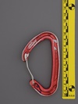
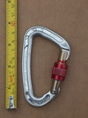
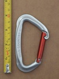
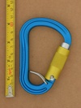

| Image | Summary | ||||
|---|---|---|---|---|---|
 | Wild Country EOS | asymmetric D | manual | gate stopped - unknown | modern medium screwlocker with extruded sleeve |
|  | Wild Country Helium (v2) | asymmetric D | n/a | n/a | hot-forged hooded wiregate |
 | Wild Country Helium 3.0 | asymmetric D | n/a | n/a | state of the art hot-forged hooded wiregate |
 | Wild Country Microlite (screwlock) | asymmetric D | manual | nose stopped - longitudinal interferance | late 80's lightweight screwlock |
|  | Wild Country Neon Screwlock | asymmetric D | manual | gate stopped | an excellent light weight screwlock carabiner |
 | Wild Country Oxygen Bent Gate (v2) | asymmetric D | n/a | n/a | snagless clawlock nose |
 | Wild Country Oxygen Straight Gate (v1) | asymmetric D | n/a | n/a | snagless clawlock nose |
|  | Wild Country Oxygen Straight Gate (v2) | asymmetric D | n/a | n/a | snagless clawlock nose |
|  | Wild Country Xenon HMS Tri-Lock Belay | HMS | full-auto | lift-and-twist | autolocking HMS with wire keeper |